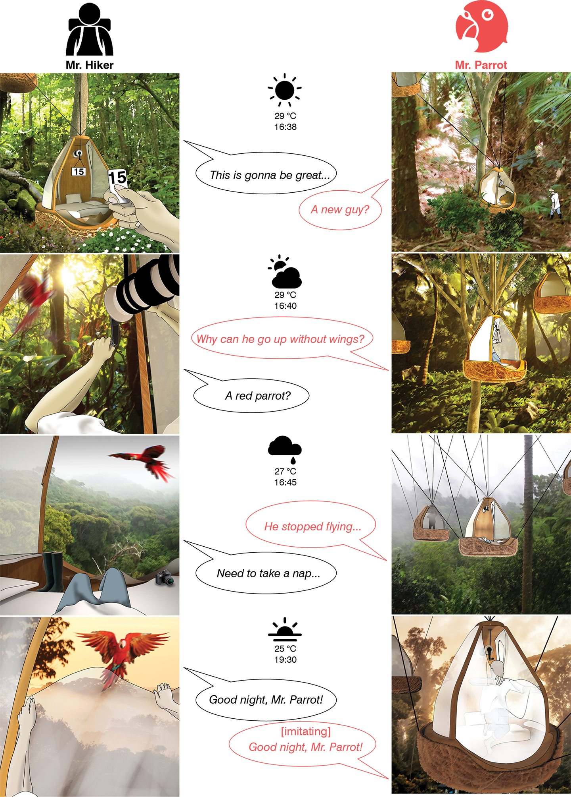
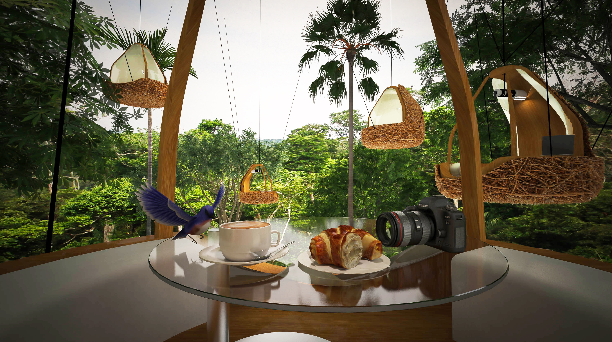

HUMAN NEST
A harmonious way of viewing birds in a rainforest is to embed oneself into the forest like a bird in a nest.
The one-week design exercise of the studio asked us to design a treehouse for bird-viewing hikers in Panama.
My proposal is a nest-like shelter hanging on trees. Instead of using stair or ladder, which seems too interruptive to
the untouched environment, a cabled winch system allows hikers to lift themselves (and their nests) up to the desirable height.
To further minimize its artificial appearance, the nest is hidden inside its twiggy coating. During a summer night when
hanging nests twinkle in the canopies like glowworms, you may only hear the sounds of winches rotating, zippers of
tents tugging, in addition to wind and songs of cicadas... [Instructor: Terence Riley; Manuel Rojo; Wesley Kean, UM Upper Level Studio]

